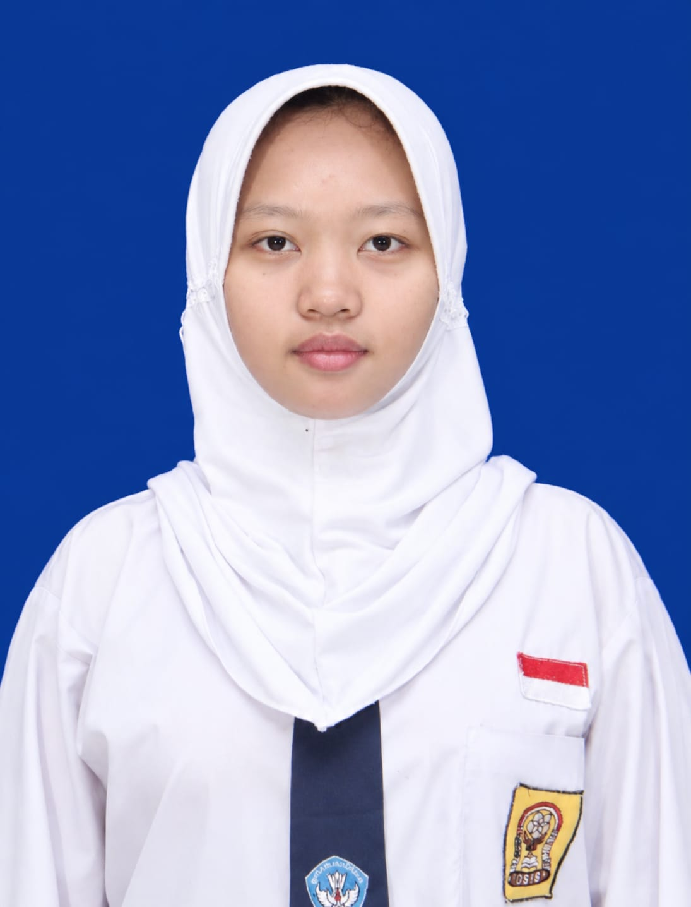
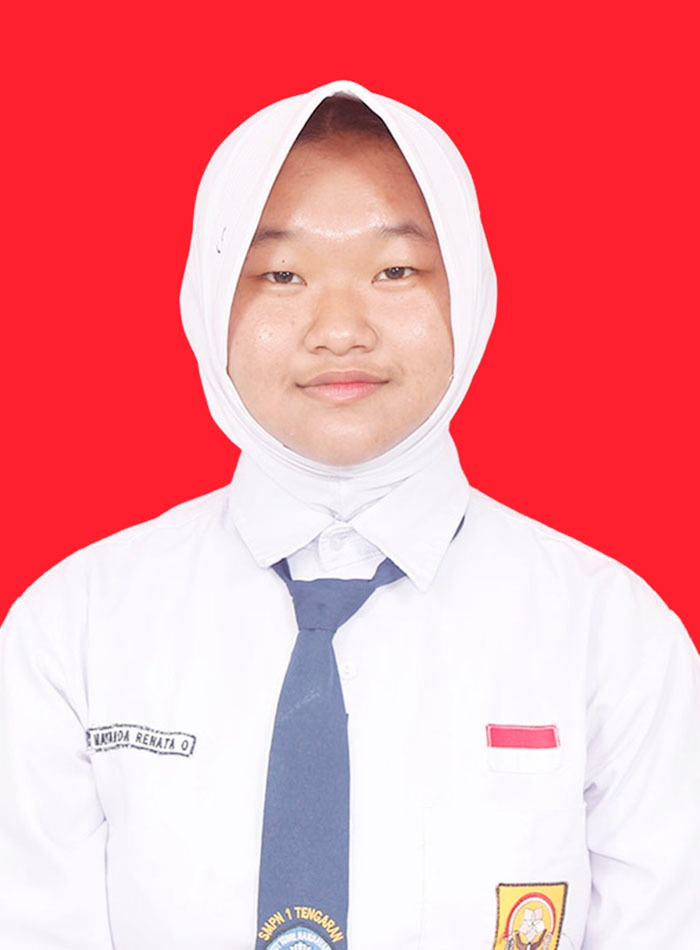
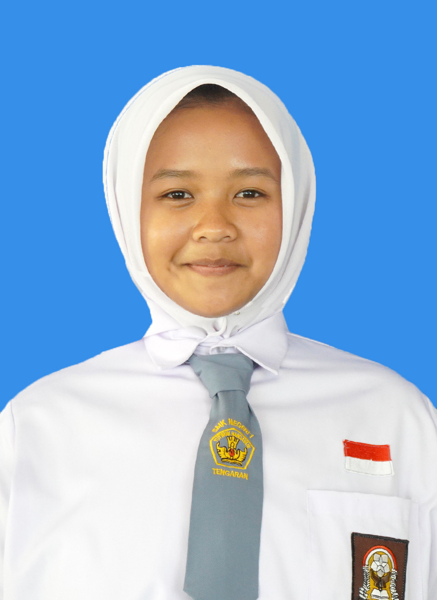

Kelas = X PPLG 2
Hobi = Menonton film

Kelas = X PPLG 2
Hobi = Mendengarkan musik

Kelas = X PPLG 2
Hobi = Membaca buku
EcoCycle lahir dari sebuah pertanyaan sederhana: kenapa sampah selalu dianggap sebagai akhir, padahal bisa menjadi awal yang baru?
Setiap hari, kita menghasilkan sampah tanpa sadar. Botol plastik setelah minum, kertas yang sudah tidak terpakai, kemasan makanan yang langsung dibuang. Kita menganggap itu sudah selesai. Padahal, di tangan yang tepat, sampah-sampah itu masih bisa punya cerita kedua.
Di sinilah EcoCycle hadir. Bukan hanya sebagai proyek sekolah, tetapi sebagai cara kami untuk mengajak semua orang melihat sampah dari sudut pandang yang berbeda. Bahwa memilah bukan hal yang ribet, mendaur ulang bukan hal yang kuno, dan peduli lingkungan bukan hanya tugas petugas kebersihan.
EcoCycle mengajarkan kita untuk berhenti sejenak sebelum membuang. Berpikir, apakah ini masih bisa dipakai? Apakah ini bisa diolah lagi? Apakah ini bisa bermanfaat untuk orang lain?
Karena kami percaya, bumi tidak butuh orang yang sempurna. Bumi hanya butuh orang-orang yang mau mulai, walau dari hal yang paling kecil. Dari satu tempat sampah di kelas, dari satu botol yang dipilah, dari satu teman yang diajak untuk peduli.
Dan dari langkah-langkah kecil itulah, perubahan besar akan dimulai. Satu sekolah yang lebih bersih, satu lingkungan yang lebih hijau, dan satu generasi yang lebih peduli.
Ubah Sampah, Ubah Masa Depan.
- Kelompok 9